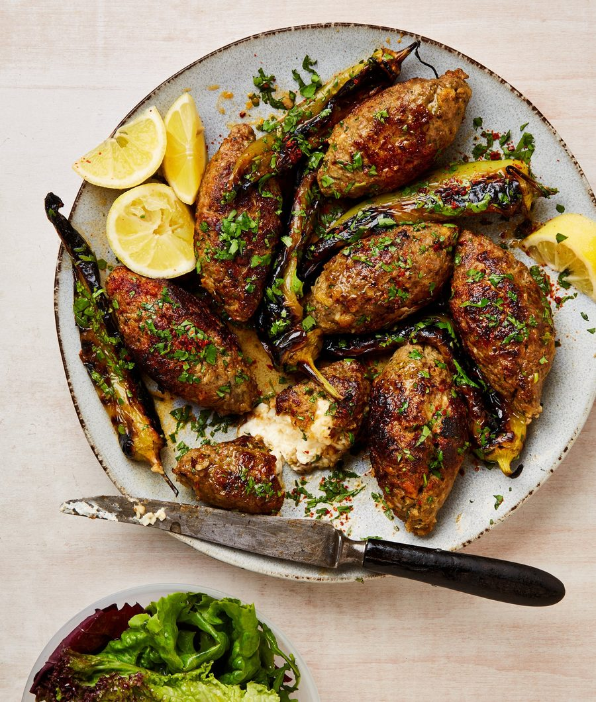

Feta-stuffed koftas with grilled peppers

You can marinate the peppers and shape the koftas a day ahead, if you like, leaving just the grilling to be done before serving. Serve with rice or roast potatoes and a fresh green salad.
Put a large frying pan for which you have a lid on a high heat. Once hot, lay in the whole peppers and weigh them down with a heavy-bottomed saucepan. Char for five minutes on each side, then take off the heat and set aside until they’re cool enough to handle. Put five of the peppers in a bowl, add the vinegar, lemon juice and a pinch of salt, and leave to marinate. Set aside the pan for now.
Pull off and discard the stem from the remaining pepper, then put the pepper in the small bowl of a food processor with the onion, garlic and 25g chopped coriander. Blitz to a smooth paste, then scrape into a large bowl and add the lamb, panko, lemon zest, cumin, aleppo chilli, half a teaspoon of paprika, three-quarters of a teaspoon of salt and a good grind of pepper, and mix well to combine.
Divide the lamb mixture into eight 70g balls. Put one ball in your hand and flatten it to make a disc. Place a square of feta in the centre, then wrap the meat around it to encase the cheese. Shape the kofta into a torpedo shape, squeezing the ends so they’re slightly pointed. Repeat with the remaining lamb mix and cheese.
Put the oil in the same frying pan on a high heat, then, once it’s hot, put in the koftas, making sure they’re spaced well apart (if the pan isn’t big enough, you may have to fry them in batches). Cook the koftas for eight minutes, turning them every two minutes, so they cook and colour evenly. Add the remaining quarter-teaspoon of paprika, cover the pan and leave the koftas to cook for two minutes more, until cooked through.
Transfer the koftas to a platter. Spoon two tablespoons of the oil from the frying pan into the pepper bowl, add half the remaining chopped coriander and stir to combine. Once they’re cool enough to touch, tear open the koftas and spoon the marinated peppers over the top of them. Sprinkle over the last tablespoon of chopped coriander and a generous pinch of aleppo chilli, and serve with the lemon wedges.